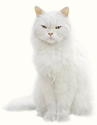

SAFARI
Users
- General & History
- Dogs as food
- Cats as food
- Health Considerations
General & History
I make no moral judgement as to whether people should eat dog or cat, or any other animal for that matter - that is for each of you to decide on your own. If you have decided to eat any animals, I see little difference between any one and another so long as they have been raised for food in a respectful manner and were humanely killed. I do not agree with eating animals that have been treated as pets - that's a betrayal of trust.
Both dog and cat are forbidden by Jewish and Islamic food law since acceptable meat must come from animals that both have split hoofs and chew a cud.
Dog
Dog has been a common menu item particularly in Korea but also in parts of China, Southeast Asia, some Indonesian islands and occasionally in Native American communities. In French Polynesia dog was long the only available meat animal, and it was much enjoyed in Paris during the Franco-Prussian war. Dog butcher shops still existed in Paris at least until 1910 (rumors are it is still served in some parts of Paris). Photo © i0150.
Of course, with a large Asian population, dog is eaten in California, but not openly. A couple of annoying yapping dogs in the neighboring condos became suddenly silent, but, hey, the folks may have moved, I don't know.
I confess I've never eaten either dog or cat, but the Parisian literati in 1870 said it was light pink and delicious. Westerners who have sampled dog meat recently, variously describe it as similar to mutton, a bit fatty tasting and a bit chewy. It is mostly used in soups and stews.
All this outrages pet lovers but makes logical sense. Dogs are less intelligent and more dangerous than pigs, which can be just as friendly and sociable, yet most pet lovers eat pig regularly.
In China, a cottage industry has long bred dogs for flavor (Chow dog anyone?), but large commercial operations are now developing, particularly breeding St Bernards with local breeds to provide a desirable combination of size, growth, disease resistance and lots of lean meat. This has, of course, produced screams of outrage from the Swiss.
Major, and certainly legitimate complaints against Korean dog eating are that the animals are raised under inhumane and unsanitary conditions and are tortured to death by hanging and beating with bats. That's said to tenderize them and improve flavor. As of 2018 animal welfare laws have been brought to bear, and the courts have ruled it illegal to kill dogs for food. It's probably still done and will be for some time - food traditions are very persistent.
Dog Relatives
, such as bears, raccoons, seals, sea lions, weasels, otters and badgers are eaten in various North American regions but are treated separately under game animals. All of them, and dogs as well, must be cooked by the rules for pork, because they can all be carriers of trichinosis (as can humans).Cat
 Cat has been an emergency food in Europe, consumed when other supplies are short. It is a more common item of consumption in East Asia and Southeast Asia, though much less so than dog - except in the Guangdong region of China. Cat is common in Cantonese cuisine, to the distress of the northern Chinese who have recently adopted a Western attitude towards cats as pets and companions. Photo © i0149.
The common house cat can be used in any rabbit recipe and tastes about the same, to the extent the standard reference Larousse Gastronomiqe includes comparative illustrations of the bones so you can tell which you are being served, if that matters to you.
I have first hand corroboration from a WWII Luftwafe
antiaircraft gunner that this substitution works fine.
In England also, cat was featured as "roof rabbit" during WWII.
Oh kittens, in our hours of ease
Uncertain toys and full of fleas,
When pain and anguish hang o'er men,
We turn you into sausage then
As for larger cats, zoo keepers who've had to shoot a lion now and then testify that lion is delicious (and again, similar to rabbit), but it's way too expensive to appear in your local supermarket. Lion is available from an exotic meat perveyor in Southern California. He's taken a lot of flack for this, but he gets it from a farm in the Midwest that raises lions for their pelts. Before he started buying it, it was fed to dogs.
Cat Relatives
, mostly civets and palm civets, are eaten in China and Southeast Asia, and are suspected of introducing dangerous viral diseases to humans (the recent SARS outbreak). They are captured wild and not raised under controlled conditions.Health Considerations
As with all other animals that are not strictly vegetarian, dog and cat provide a high risk of trichinosis, a parasitic worm infection that can sometimes be deadly or debilitating. Dog and cat should always be thoroughly cooked to an internal temperature of 165°F/70°C before consuming.